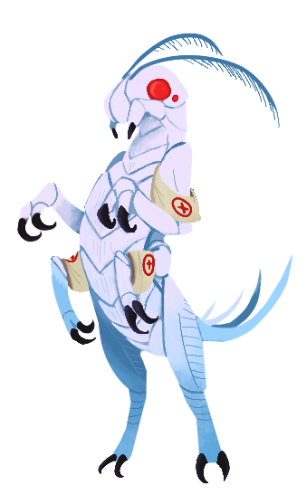

White Rabbit

Insectoid like humanoid, one pair of extra limbs caused by mutation; unable to complete complex movement.
Original status: Recounted being a war medic before falling into the wonderland trench.
Preferred location: wonderland trench, near surface.
Awfully nice fellow, loves to partake in tea with any unfortunate guests who end up in the trenches.